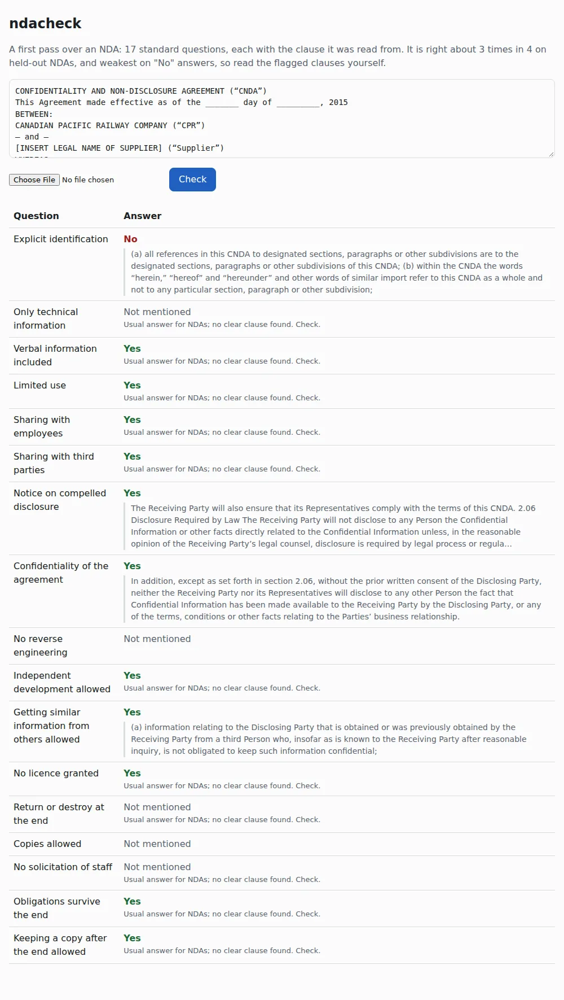

情境
NDA 的第一輪審閱既慢又重複，而在禁止挖角員工的條款上答錯「是」代價很高。ContractNLI 提供 607 份真實 NDA，每份都針對 17 個問題標註了答案所依據的條款。
每次審閱 NDA 都會問同樣的問題：對方可以挖角我們的員工嗎？資訊必須標示嗎？可以保留副本嗎？ndacheck 回答其中 17 個問題，並引用每個答案所依據的條款，讓人從引用的條款開始看，而不必讀完整份 NDA。
的答案正確；這是在保留測試集的 123 份 NDA（2,091 個答案）上量得，而對每個問題一律給出常見答案的基準為 65.9%。
限制：企業最在意的「否」答案，正是表現最弱的部分：在開發集上，95 個真正的「否」只答對 44 個。大約每四個答案就有一個是錯的。
開啟儲存庫
NDA 的第一輪審閱既慢又重複，而在禁止挖角員工的條款上答錯「是」代價很高。ContractNLI 提供 607 份真實 NDA，每份都針對 17 個問題標註了答案所依據的條款。
一個現成、用來判斷條款是支持還是矛盾於某個陳述的模型（NLI），不會把「不得向任何第三方揭露」讀成與同一份 NDA 其他地方給予的許可相矛盾。
用關鍵字為每個問題挑出最多四個候選條款，由 NLI 模型為每個條款評分，再用在訓練集上逐題擬合的門檻值，把分數轉成是、否或未提及。
在測試集上正確率 73.8%，常見答案基準為 65.9%，且在 17 個問題中有 15 個勝過基準。測試集評分過三次，每次之後都沒有做任何調整。
條件限制：一個約 0.7 GB 的現成模型（cross-encoder/nli-deberta-v3-base）、不做微調、一個公開資料集（ContractNLI，CC BY 4.0）、僅限英文。
當沒有任何條款超過門檻時，ndacheck 會給出在訓練集上擬合的逐題預設答案，並標示「無明確條款，請檢查」，不附引文。其他每個答案都會引用它所根據的條款，讓審閱者每個答案先檢查一句話就好。附有引文的答案仍可能是錯的。
針對表現弱的「否」答案做了三種修正，每種都在訓練集上擬合，使訓練集正確率最高升到 76.6%，但開發集沒有提升，所以三種都被捨棄，系統維持不變。強制回答「否」的關鍵字規則也因同樣理由被捨棄。真正可能有效的修正，是在 ContractNLI 上微調過的模型。
Verbal information included yes
"1. Confidential Information includes all information disclosed in writing or orally."
Limited use yes
"2. The Recipient shall use Confidential Information solely for the Purpose."
Sharing with employees yes (usual answer for NDAs; no clear clause, check)
...
No solicitation of staff yes
"3. For one year the Recipient shall not solicit or hire any employee of the Discloser."需要 Python，以及約 0.7 GB 給 NLI 模型，首次執行時下載。頁面可接受貼上的文字，或含文字層的 .pdf、.docx、.txt。評測需要從 Stanford 下載 ContractNLI。
docs/results-test.md，由 scripts/evaluate.py --split test 產生，附有與基準對照的逐題表格。
$ uv venv && uv pip install -r requirements.txt $ source .venv/bin/activate $ python -m ndacheck examples/sample_nda.txt # add --json for machine-readable output $ uvicorn ndacheck.app:app --port 8850 # web page at http://localhost:8850 $ pytest -q -m "not slow" # fast tests (what CI runs) $ python scripts/evaluate.py --split train --tune # fit thresholds on train $ python scripts/evaluate.py --split test # writes docs/results-test.md